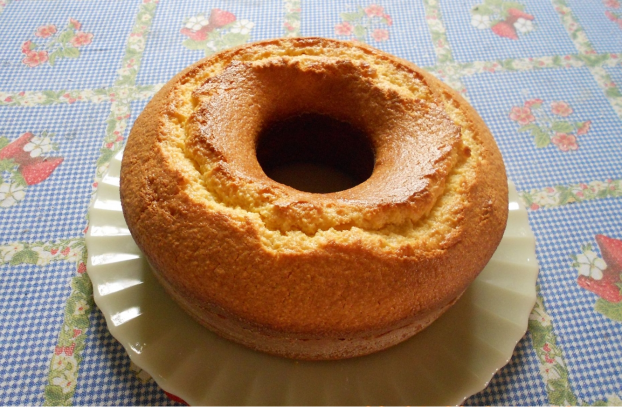

Bolo de fubá caseiro para uma tarde aconchegante com seu café na hora do lanche
Referência: Bolo de fubá caseiro para uma tarde aconchegante com seu café na hora do lanche. Tudo GostosoO bolo de fubá é uma das receitas da vovó mais deliciosas do mundo. Cada um tem a sua receita favorita. Alguns gostam simples para passar manteiga, outros preferem com o aroma de erva-doce que vai longe e também tem quem esconda uma goiabada deliciosa no meio. Dá até para fazer um bom bolo de fubá sem farinha de trigo, mas hoje vamos ensinar a fazer a receita bem tradicional igual bolo de vó! Simples e fácil de fazer, você só precisa de um liquidificador e ainda pode usar de base para as alterações que quiser. Confira no TudoGostoso como fazer a receita de bolo de fubá de liquidificador superfofo com dicas para nunca errar no bolo.
